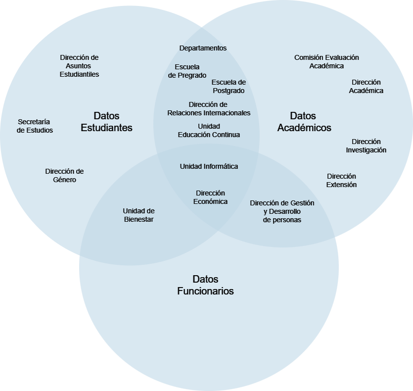

Flujogramas de Datos FACSO
2024-07-17
1 Sobre este documento
Este documento es producto del trabajo de los Analistas de Datos de la Facultad de Ciencias Sociales, en un esfuerzo por catastrar la producción y la gestión de datos de la Facultad. En las secciones siguientes, se presentan una serie de flujogramas que representan el flujo de datos e información a través de las distintas unidades, direcciones y departamentos de FACSO. Los diagramas fueron construidos gracias la colaboración de los y las profesionales a cargo de la gestión de datos e información en la Facultad, con quienes sostuvimos reuniones a lo largo de los meses de mayo y junio del 2024. Volvemos a agradecer a todos la cooperación y la disponibilidad de conversar con nuestro equipo.
El primer flujograma tiene una función descriptiva, y representa el panorama general del flujo de datos a nivel de la Facultad. Sin embargo, y entendiendo la complejidad y lo intricado que resulta este primer acercamiento, se acompaña con otros 3 diagramas que tienen una intención más operativa. Cada uno de los flujogramas entrega pistas sobre cómo y qué datos se pueden encontrar en la Facultad para cada uno de los 3 estamentos que la componen: Estudiantes, Académicos y Funcionarios. En la Figura 1, se presenta un diagrama que sintetiza cuáles unidades trabajan con datos de los distintos estamentos.
 Figura 1: Datos por unidades y estamentos
Se espera que el tener disponibilidad de esta información para toda la comunidad resulte en un primer paso para mejorar el flujo de información relevante para la Facultad y la colaboración entre nuestros distintas unidades, direcciones y departamentos.